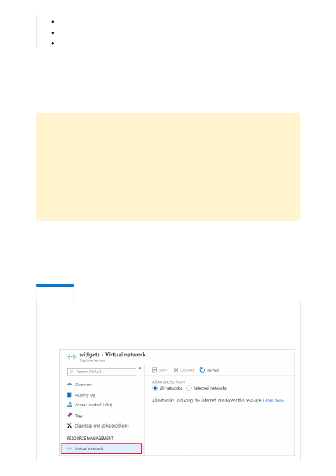
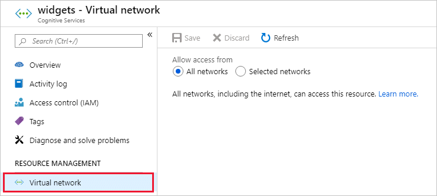

AzureResourceManager
CognitiveServicesManagement
CognitiveServicesFrontEnd
By default, Cognitive Services resources accept connections from clients on any network.
To limit access to selected networks, you must first change the default action.
You can manage default network access rules for Cognitive Services resources through
the Azure portal, PowerShell, or the Azure CLI.
1. Go to the Cognitive Services resource you want to secure.
2. Select the RESOURCE MANAGEMENT menu called Virtual network.
Change the default network access rule
２
Warning
Making changes to network rules can impact your applications' ability to connect
to Azure Cognitive Services. Setting the default network rule to deny blocks all
access to the data unless specific network rules that grant access are also applied.
Be sure to grant access to any allowed networks using network rules before you
change the default rule to deny access. If you are allow listing IP addresses for your
on-premises network, be sure to add all possible outgoing public IP addresses from
your on-premises network.
Managing default network access rules